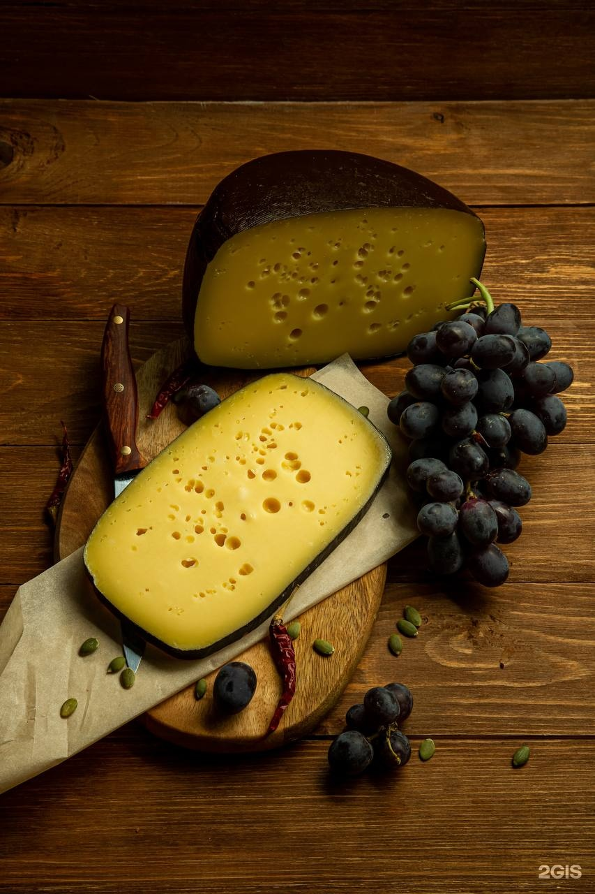
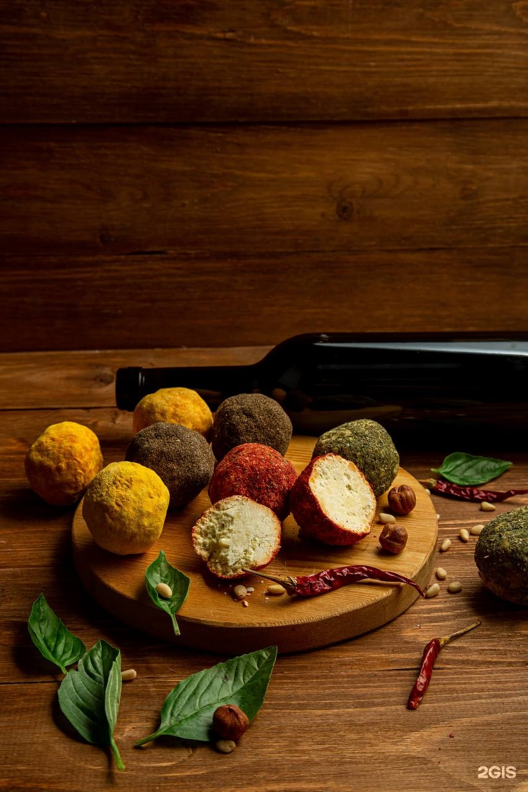
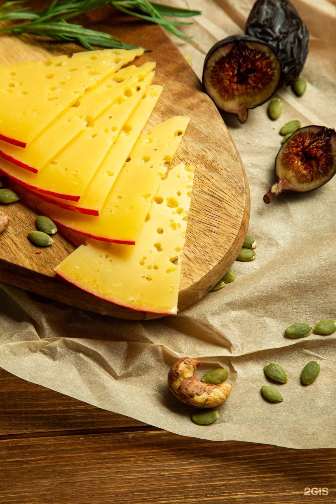
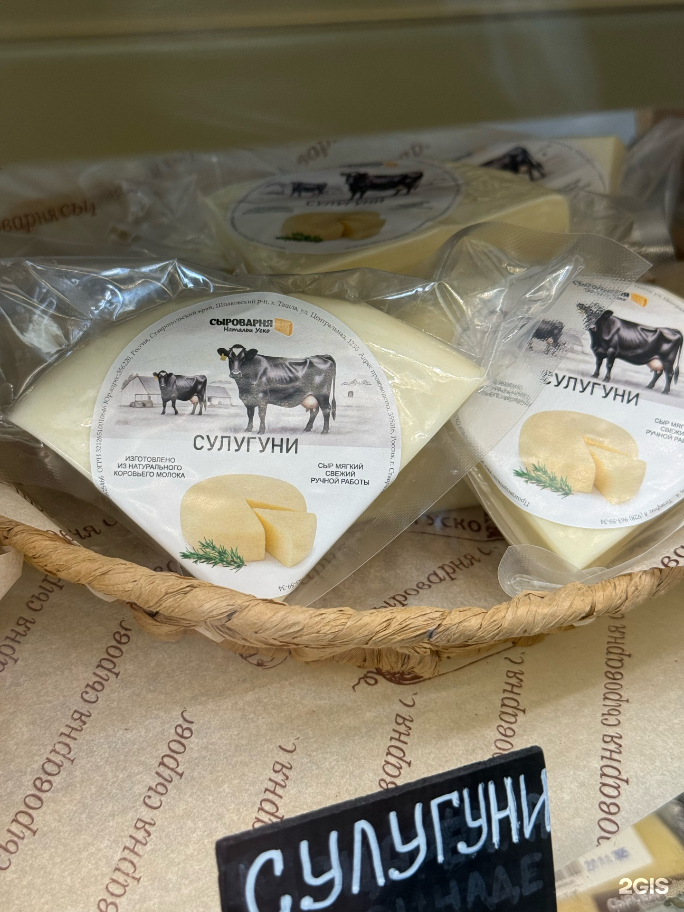
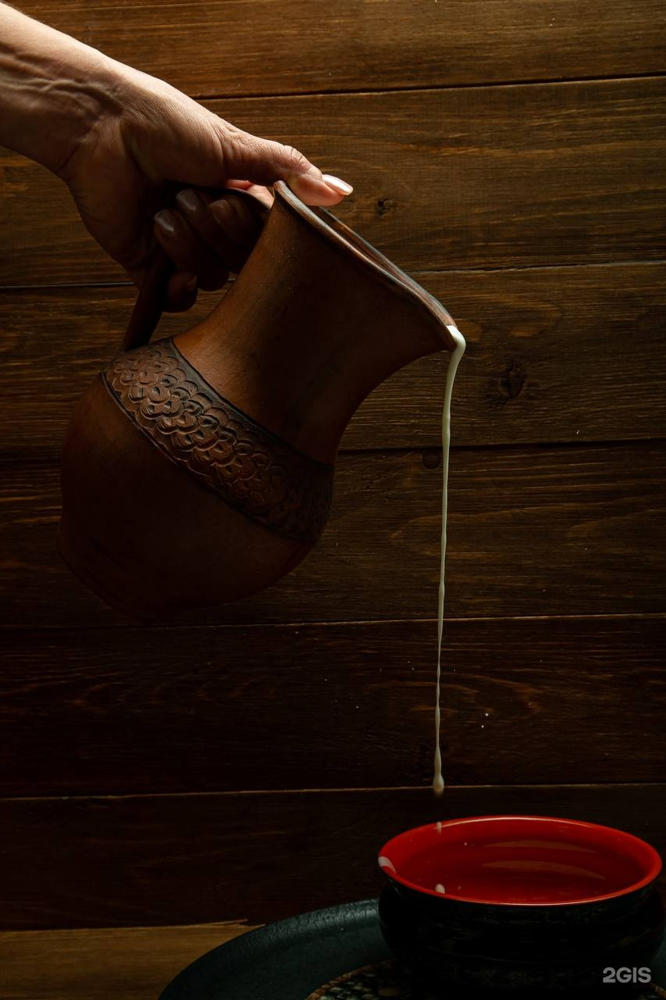
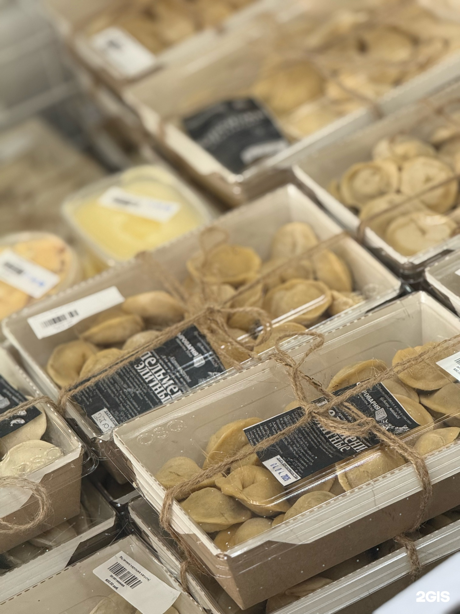
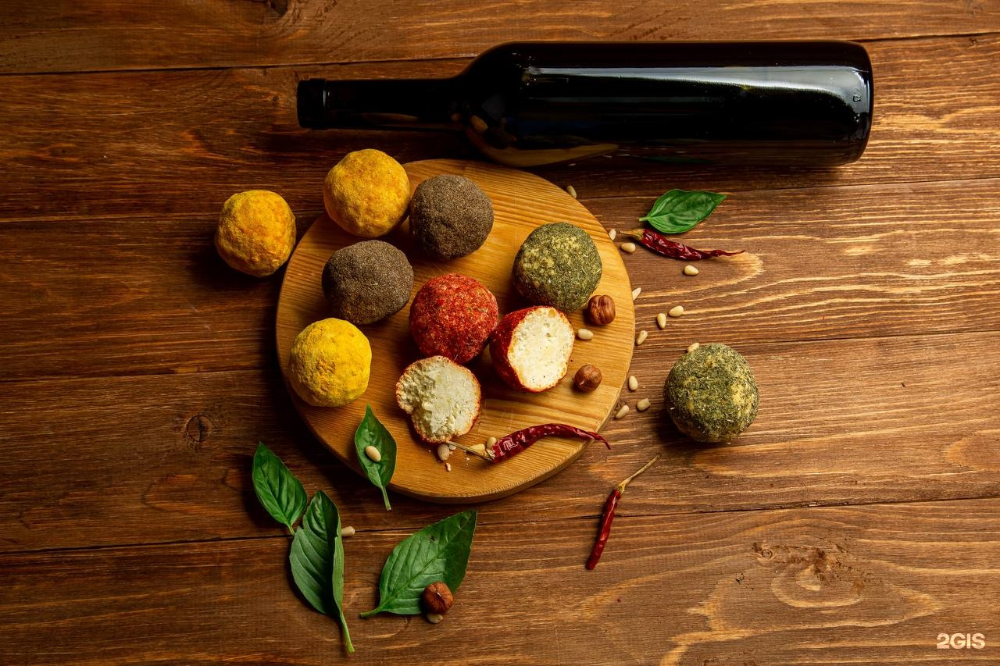

Сыр, который помнит вкус молока
Варим сыр и делаем молочную продукцию сами. Из натурального молока, небольшими партиями, каждый день — в Ставрополе. Приходите пробовать или заказывайте доставку.
Доставка по Ставрополю · Предзаказ в WhatsApp и Telegram · Рейтинг 4.9 в 2ГИС

Собственное производство
Не перепродажа: сыр варим сами.
Натуральное молоко
Без растительных жиров и лишних добавок.
Короткий срок хранения
Потому что консервантов нет.
Более 20 позиций
От качотты и бурраты до горгонзолы и козьих сыров.
Дегустация в магазине
Не покупайте кота в мешке — попробуйте.
Доставка по городу
Привезём домой или на работу.
От нежной страчателлы до выдержанной горгонзолы
В витрине всегда есть что попробовать: молодые и выдержанные, сливочные и солёные, с плесенью и копчёные.
Горгонзола и рокфор
Голубая плесень, насыщенный вкус, для гурманов. Рокфор — солоноватый и плотный.
Подробнее



Молоко, которое помнит детство
Домашнее и топлёное молоко, творог, сметана, ряженка, питьевые и густые йогурты, сливочное и топлёное масло, глазированные сырки. Всё своё — от производства до прилавка.
Короткий срок хранения. Это не минус, а доказательство того, что в продукте нет лишнего.
Посмотреть молочноеУжин, который не надо готовить с нуля
Домашняя колбаса, хинкали, пельмени, вареники, голубцы, долма, фаршированный перец, котлеты, рулеты для запекания, блины, сырники и деревенская лапша. Лепим руками, замораживаем и держим в наличии.
Цены — от 260 ₽ за килограмм. Полный прайс — на странице заморозки.
Смотреть прайс
89 оценок, 81 отзыв, 4.9 из 5
За этим рейтингом — люди, которые приходят за сыром каждую неделю, приводят детей и возвращаются за любимым сортом.
Что чаще всего говорят:
«сыр как из детства» «натурально и свежее» «большой ассортимент» «приятные цены» «продавцы помогают с выбором»
Читать отзывы →
Зайдите не только за сыром
В магазине можно попробовать сыры и соусы, собрать сырную тарелку в подарок или просто поесть домашней еды. Есть кофе, десерты и сырки — можно забежать на полчаса и уйти с чувством, что день удался.
К свежему сыру — без поездки через город
Доставляем по Ставрополю. Или оформите предзаказ и заберите в удобном филиале — мы соберём всё заранее.
- Напишите в WhatsApp, Telegram или позвоните.
- Скажите, что нужно и когда.
- Подтвердите заказ.
- Заберите в магазине или дождитесь доставки.
Филиал 1
ул. Северный обход, 11 — ежедневно с 08:00 до 21:00
Филиал 2
ул. Мимоз, 26 — ежедневно с 09:00 до 21:00
Приходите пробовать
Сыр нужно пробовать, а не читать о нём. Заходите в магазин, выбирайте, спрашивайте — мы расскажем, чем отличается качотта от горгонзолы и с чем их лучше есть.